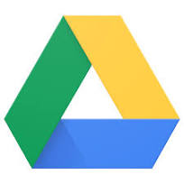
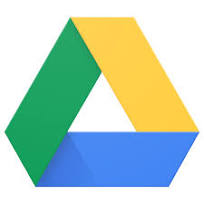

GitHub
Projects
LinkedIn
GitHub
Projects
LinkedIn
Hello!
I am currently pursuing a Bachelor’s degree in Computer Science and Engineering at PES University, Bangalore, India. Prior to this, I studied at Allen Career Institute and Deccan International School.
My primary research interests lie in Computer Vision and its applications, particularly in the medical field. I enjoy exploring how these technologies can enhance everyday experiences and solve complex challenges. From developing facial recognition systems to contributing to research on AI-based CNNs for brain tumor detection, my work reflects a deep passion for using computer vision to innovate and improve lives. More details on my projects and research can be found in my resume and publications.
In addition to academics, I have been actively involved in volunteering, where I’ve contributed to charitable events and supported community initiatives. Outside of work, I enjoy playing chess, cooking, reading, streaming games and travelling. P.S: The photograph was taken in Canary Wharf, London. I am also passionate about visual storytelling and teaching, with the goal of making a positive impact both in academia and creative endeavors.
1. Working on a project to automate radiology report generation using Image processing and Natural language processing techniques.
2. Working on comparing the performance of several state-of-the-art language models (GPT-2, BERT, BART, Llama, Mistral, and RAG with GPT-3.5-Turbo) fine-tuned for question answering
using the IEEE research papers dataset, evaluating them based on BLEU score, ROUGE-1 and ROUGE-2 metrics to determine their suitability for academic contexts.
Finished summer Internship at Center for Data Science and Applied Machine Learning at PES University.
Helped arrange Blood donation camp at Apollo Cradle and children hospital with the help of Sagar hospitals.
Published the preprint titled "Enhancing Vision Models for Text-Heavy Content Understanding and Interaction" on arXiv.
Attended the conference Hinweis Second International Conference on Advanced Research in Engineering and Technology (ARET) held in Kolkata, India virtually to present my paper.
Received the CNR award and scholarship given to top achievers in academics at PES University.